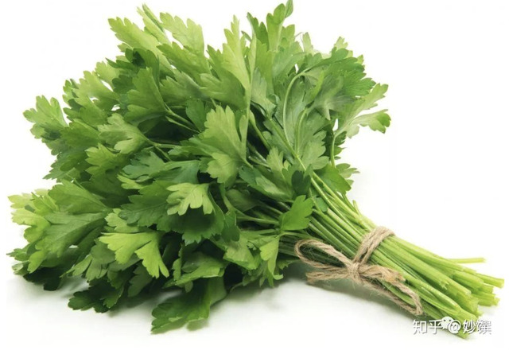
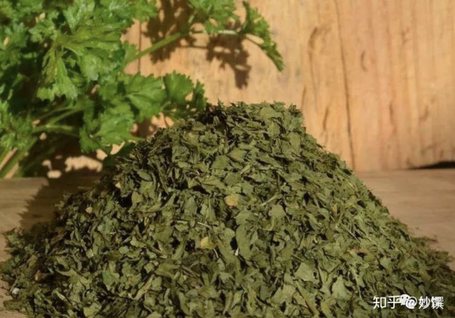
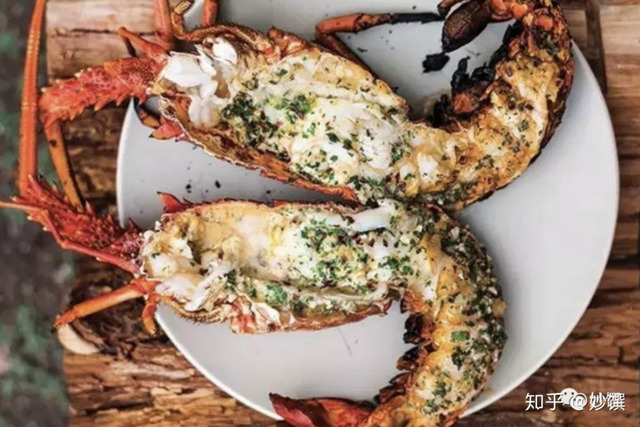
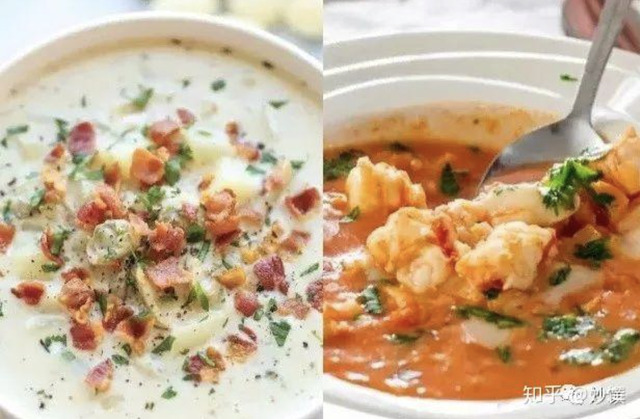

又名洋香菜，外表很像香菜（芫荽），但不是一家的。在各种西式浓汤里放新鲜欧芹碎，就像中国人喝汤放香菜；在沙拉上撒一把欧芹碎，就像中国人拌凉菜撒一把香菜，要它的清新感。

▲新鲜欧芹，图源自网络。

▲干欧芹碎，图源自网络。
气味：比中国芹菜的味道重一点。清新，所以百搭！
回顾：
应用：沙拉; 沙拉酱汁; 海鲜料理; 汤品; 面包。

▲ 香蒜欧芹烤龙虾，图源自网络。清新的欧芹很搭海鲜，去腥增香。

▲ 蛤蜊培根欧芹浓汤 & 鲜虾欧芹汤，图源自网络。
在西式浓汤里撒欧芹，就像中国人喝汤撒香菜。